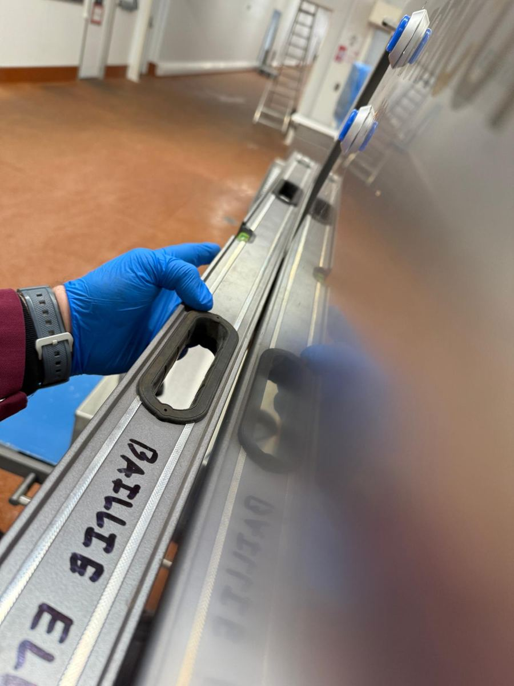
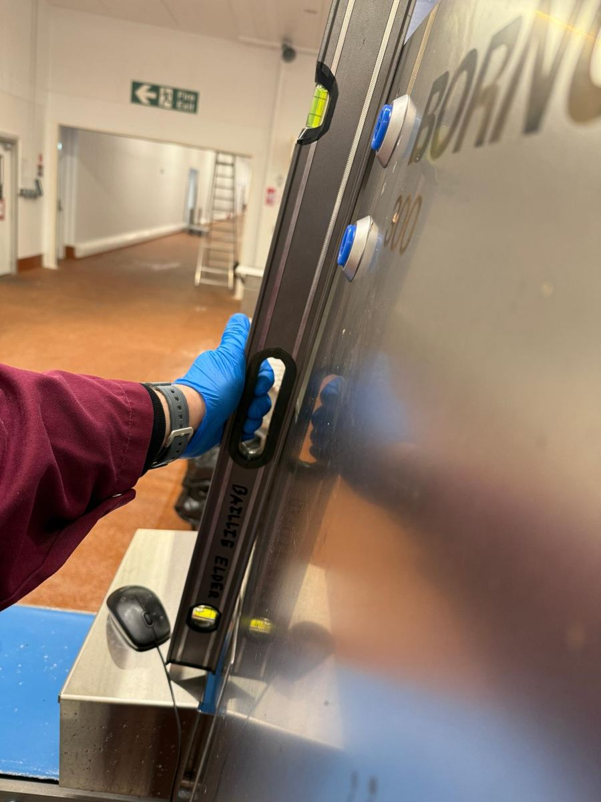
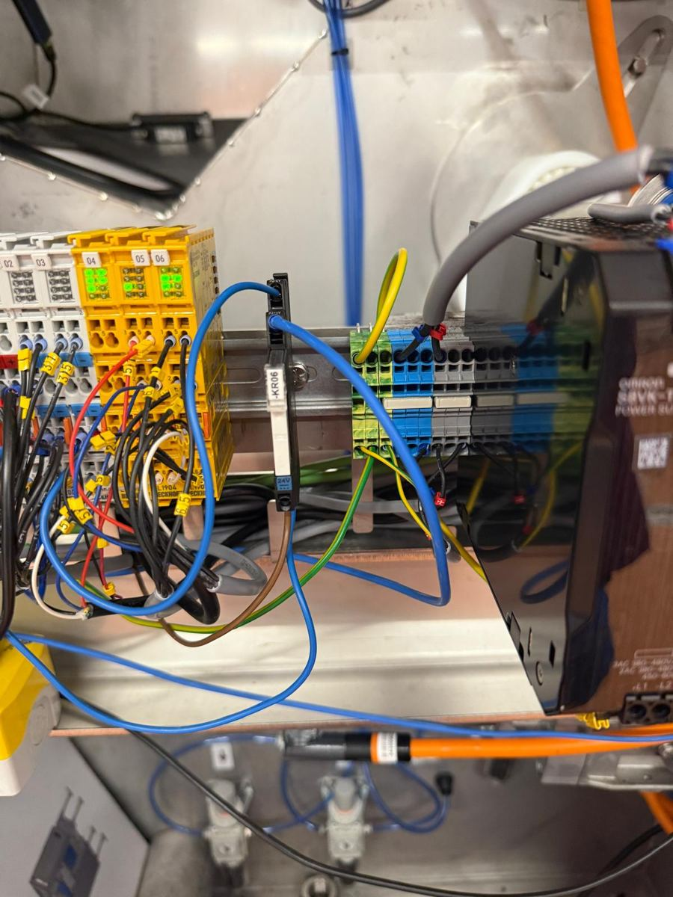
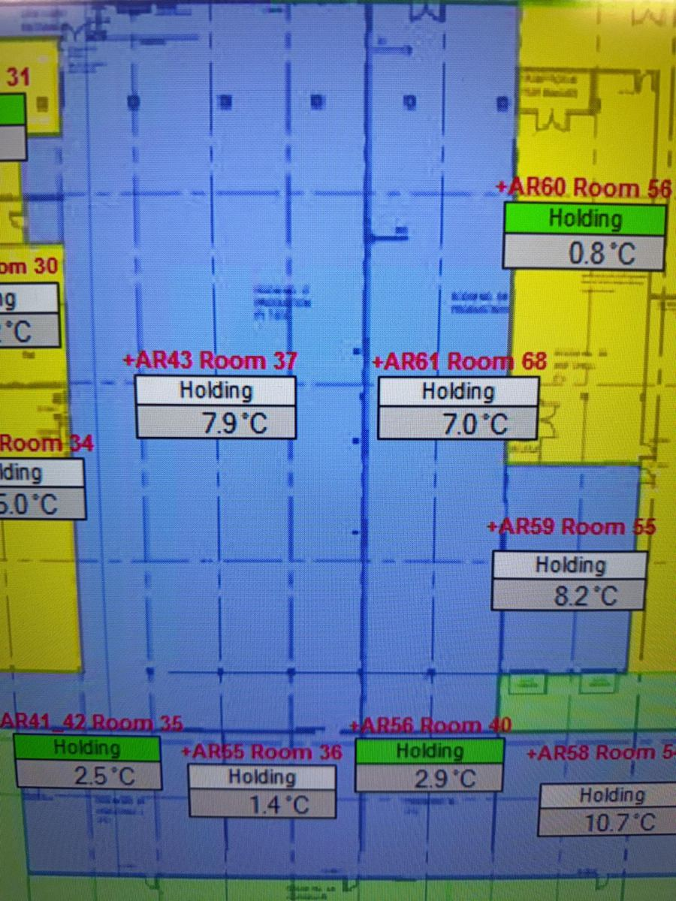
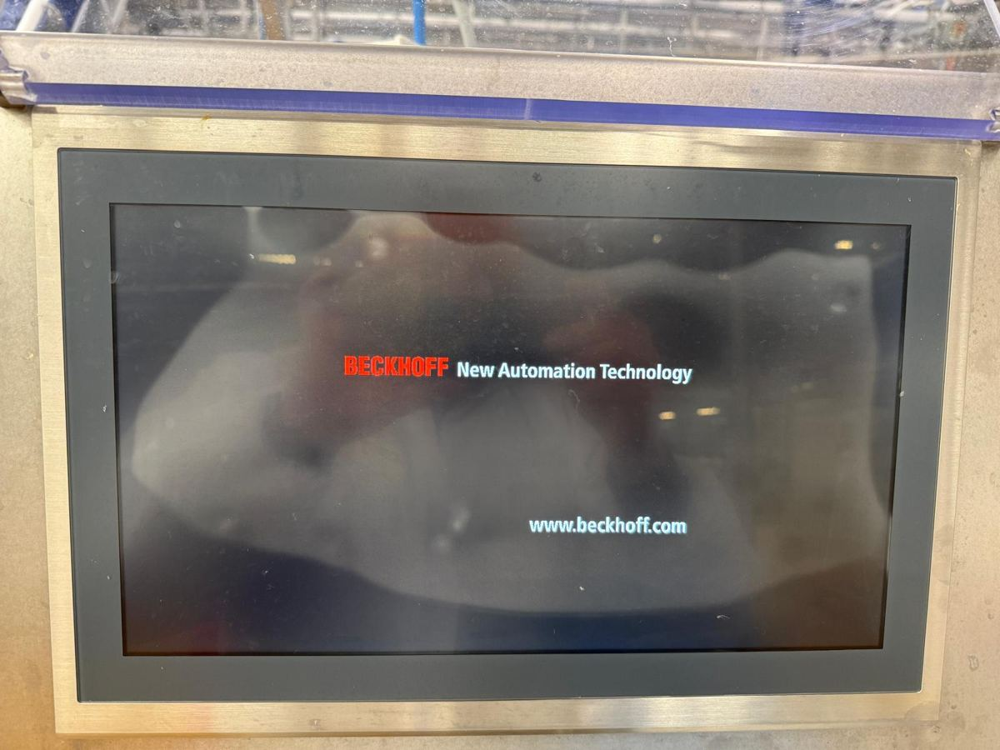
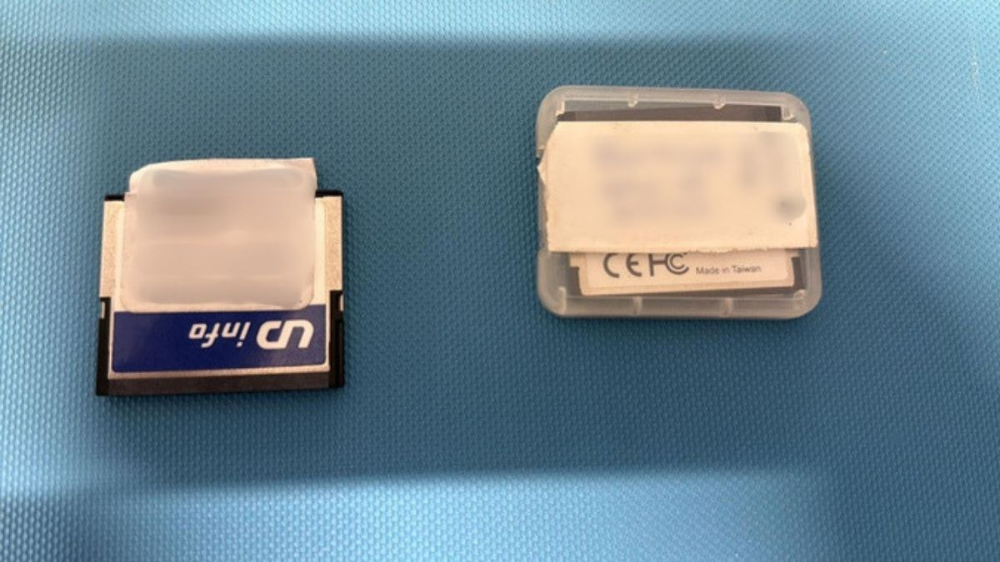

IPC / HMI Reliability Investigation
A systematic investigation of an intermittent industrial touchscreen failure that initially appeared to be hardware- or environment-related but was ultimately traced across the boundary between machine hardware, operating-system image and touchscreen-driver configuration.

Touchscreen intermittently became unresponsive on site
The industrial IPC could boot and the machine remained available, but the touch interface was intermittently non-responsive in the customer environment. Because the symptom could originate from power quality, grounding, mechanical stress, temperature, touchscreen hardware or software, the investigation was structured to eliminate causes one by one rather than replacing components based on the first assumption.
Verify 24 VDC supply, grounding and terminal integrity.
Check structural straightness and possible panel/frame deformation that could mechanically stress the touchscreen assembly and contribute to separation of the capacitive layer.
Compare behavior at site temperature and after controlled warm-up.
Compare IPC images, touchscreen drivers and configuration versions.
Cross-discipline fault isolation
I worked through the problem as a field-engineering investigation rather than a component-swap exercise. The process included electrical checks, grounding verification, mechanical installation checks, temperature observations, comparison testing away from the machine, software/image comparison and touchscreen-driver review. The objective was to isolate the layer in which the failure actually originated.
Electrical verification
Checked the IPC supply and grounding path, then added a direct grounding connection to test whether grounding quality was contributing to the touchscreen failure.
Mechanical verification
Checked the straightness of the machine/panel construction to investigate whether structural deformation could be mechanically loading the display and potentially contributing to separation of the capacitive touchscreen layer.
Environmental comparison
Documented the cold-room operating environment and compared behavior after the IPC was warmed and tested away from the machine.
Software / image analysis
Performed direct software comparison between IPC configurations/images and Elo touchscreen-driver versions to isolate differences that could explain the failure.
Hypothesis → test → evidence → next hypothesis
Confirm IPC supply and eliminate obvious voltage issues.
Verify PE/ground path and test a direct grounding connection.
Check construction straightness and possible deformation-induced stress on the display/capacitive layer.
Compare cold-site behavior with warmed IPC behavior.
Test IPC / touchscreen away from the machine environment.
Compare IPC software/images and touchscreen-driver versions side by side.
Apply corrected configuration and confirm restored touch behavior.
What each test contributed
| SUSPECTED CAUSE | TEST / EVIDENCE | OBSERVATION | ENGINEERING CONCLUSION |
|---|---|---|---|
| 24 VDC supply | Supply verification on the IPC system. | No clear supply fault explaining the intermittent touch symptom. | Power remained a necessary check, but not the primary root cause. |
| Grounding | PE/ground inspection followed by a direct-ground connection trial. | Additional grounding did not resolve the issue. | Grounding was not sufficient to explain the failure. |
| Mounting stress | Straightness / level checks of the machine and panel construction around the IPC installation. | No decisive structural deformation was found that could explain capacitive-layer separation or the intermittent touch failure. | Mechanical installation remained acceptable for continued investigation. |
| Temperature | Site-temperature observation and warm-up comparison. | Touch functionality recovered when the IPC was warmed away from the machine. | Temperature looked correlated with the symptom, but did not yet prove the root cause. |
| IPC hardware | Off-machine comparison and repeat testing. | Hardware could operate correctly under different conditions. | Pure hardware failure became less likely. |
| Image / driver | Side-by-side comparison of IPC software/images and Elo touchscreen-driver configurations. | A driver / image inconsistency was identified. | Software configuration became the confirmed root-cause path. |
Selected investigation photos






The misleading part of the symptom
Root cause: touchscreen-driver / system-image configuration conflict
The investigation initially pointed toward environmental or hardware-related behavior because the touch interface could recover after warm-up. Further comparison showed that the decisive difference was in the software image and Elo touchscreen-driver configuration. Updating the configuration resolved the touch-function issue.
Relevant to complex equipment service
This troubleshooting approach transfers directly to marine automation, medical equipment, pharma machinery and other high-value systems where a visible symptom may be produced by interactions between hardware, software, environment and installation. A structured elimination process reduces unnecessary replacement, shortens diagnosis and produces a more defensible root-cause conclusion.